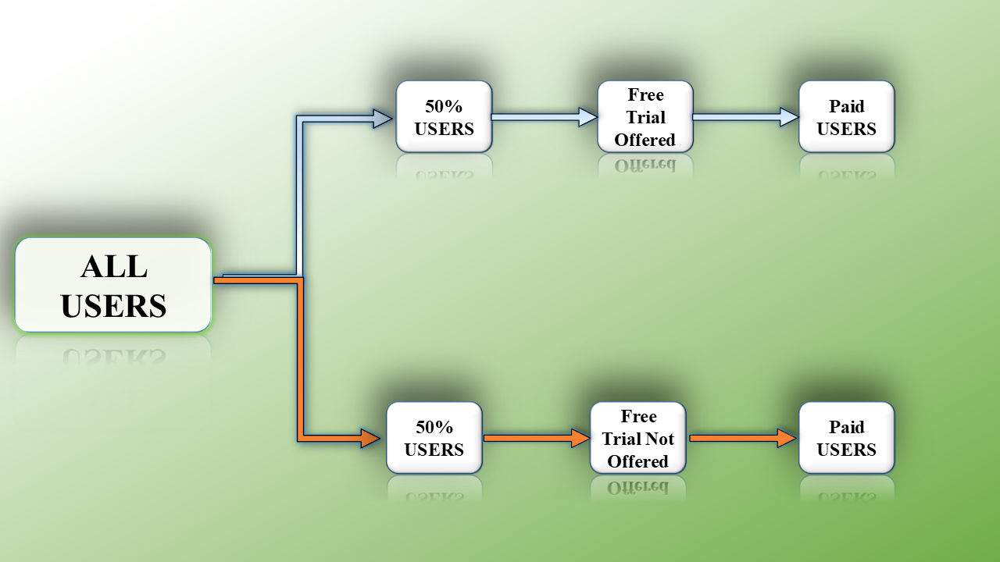

Journal
A/B testing, explained with one simple question
How analysts compare two versions of something and decide which one works, using a free trial for a subscription product as the example.

A/B testing is one of the most useful skills an analyst can have. The idea is simple. You take two versions of something, show each one to a different group of people, and see which version does better. Websites, email campaigns, pricing pages and product features all get tested this way.
The idea is the easy part. The hard part is running the test so that you can trust the answer. This note follows one example from start to finish, then covers the mistakes that spoil tests most often.
The question: does a free trial lead to more paying customers?
Say a company has a free plan and a paid premium plan. The team wants to know whether letting new users try the premium features for 7 days makes more of them end up paying. Every number below is made up for the example, but the steps are the same ones you would follow on a real test.
Step 1: Define the goal and write the hypothesis
Start with one metric you will judge the test by. Here it is the conversion rate: the share of new users who become paying subscribers. Choose it before the test starts, not after you have seen the data.
Then write two statements the test can settle:
- Null hypothesis (H0)
- The free trial makes no difference to the conversion rate.
- Alternative hypothesis (H1)
- The free trial raises the conversion rate.
From here the whole test asks one thing: is the data strong enough to reject H0?
Step 2: Make two versions
- Version A, the control: no trial. Users sign up for the free plan and must pay straight away to use premium features.
- Version B, the variant: a 7-day trial of the premium features. When it ends, the user can choose to upgrade.
Change one thing only. If version B also had a new price or a redesigned sign-up page, you would never know which change did the work.
Step 3: Split users at random and size the test
Each new user is assigned to A or B at random, ideally by the system and not by a person. Random assignment is what makes the two groups comparable, so the trial is the only systematic difference between them. In the example there are 5,000 users in each group.
Decide how many users you need before you start. It depends on how small a difference you want to be able to detect, and small differences need a lot more people. With a baseline conversion rate of 2%, the usual settings (95% confidence, 80% power) and a hoped-for rise to 3%, you need about 3,800 users per group. To detect a rise to only 2.5% you would need about 13,800 per group. Sample size calculators do this arithmetic for you, and in R the power.prop.test() function does too.
Step 4: Run it, then leave it alone
Run the test for the length you planned, 30 days in this example, and try to run it in whole weeks so every day of the week is counted equally. Resist checking the results every morning and stopping the moment B pulls ahead. Early numbers swing a lot, and stopping when they happen to look good is one of the easiest ways to fool yourself.
While it runs, track upgrades in each group. Also log what trial users do with the premium features. You will want that later to explain the result, not just report it.
Step 5: Read the results
Here is what the data might look like at the end:
| Metric | Group A (no trial) | Group B (trial) |
|---|---|---|
| Users | 5,000 | 5,000 |
| Paid conversions | 100 | 250 |
| Conversion rate | 2% | 5% |
Group B converted at 5% against 2% for group A. That is 3 percentage points higher, or 2.5 times as many paying users. Report both numbers. The absolute gap is what the business will feel in revenue, while the relative lift is the one that sounds more impressive.
Step 6: Check that it is not just chance
A gap like this can appear by luck alone, especially with small groups. A significance test tells you how likely a gap this big would be if the trial really did nothing. For two conversion rates, the usual choices are a two-proportion z-test or the equivalent chi-square test.
On these numbers the z-score is about 8.2 and the p-value is far below 0.001. In R you can get it in one line:
prop.test(x = c(250, 100), n = c(5000, 5000))
Compares the two conversion rates and returns the p-value and a confidence interval
The common cut-off is a p-value below 0.05, and this result clears it easily. But a p-value only says the difference is probably real. It does not say how big it is. For that, look at the confidence interval: here the true gain is probably between 2.3 and 3.7 percentage points. That range is more useful to a manager than a single p-value.
Step 7: Make a decision
If the result is significant and the gain is worth having, you can recommend giving the free trial to everyone. Remember the trial has a cost too, because those users are using premium features for free for a week. A good recommendation weighs the extra paying users against that cost.
If the result is not significant, that does not prove the trial does nothing. It may mean the test was too small to see the effect. Before dropping the idea, you could try:
- Changing the length of the trial.
- Adding an incentive to upgrade during the trial.
- Improving the onboarding so trial users find the premium features sooner.
Step 8: Look past the headline number
The conversion rate answers the main question, but the same data can tell you more:
- Engagement during the trial. Did users who actually used the premium features convert more often? If so, the real lever may be getting people to use those features early, not the trial itself.
- Retention. Do people who convert after a trial stay subscribed as long as people who paid straight away? A trial that wins signups but loses them after two months is not a win.
- Segments. Results can differ between new and returning users, or by country or device. Treat these as ideas for the next test, not as conclusions. The more ways you slice the data, the more likely you are to find a pattern that is only luck.
Mistakes that spoil tests
- Stopping early. Calling the test the first day B looks ahead. Decide the end date up front and keep to it.
- Checking too many metrics. If you look at twenty numbers, one of them will look significant by luck. Pick your main metric before you start.
- Uneven groups. If you planned a 50/50 split and ended up with 5,000 users in one group and 4,300 in the other, something is wrong with how users were assigned. Fix that before trusting any result.
- Odd timing. A test that runs over a holiday, a big sale or an outage may not reflect normal behaviour.
- The novelty effect. People sometimes react to anything new. If the effect fades after a few weeks, a short test will overstate it.
- Changing the goal afterwards. Moving the target after seeing the data is just choosing the answer you like.
Why this matters
Without a test, the question "is the free trial worth it?" turns into an argument between opinions. With one, it becomes a number with a range around it, and the team can decide based on that.
Key takeaways
- Start with one clear hypothesis and one main metric, chosen before the test begins.
- Randomise who sees which version, and change only one thing between them.
- Size the test first. A test that is too small can miss a real effect.
- Check significance and the size of the effect. The p-value says if it is real, the confidence interval says how much.
- Look beyond the headline. Engagement and retention tell you whether a win will last.